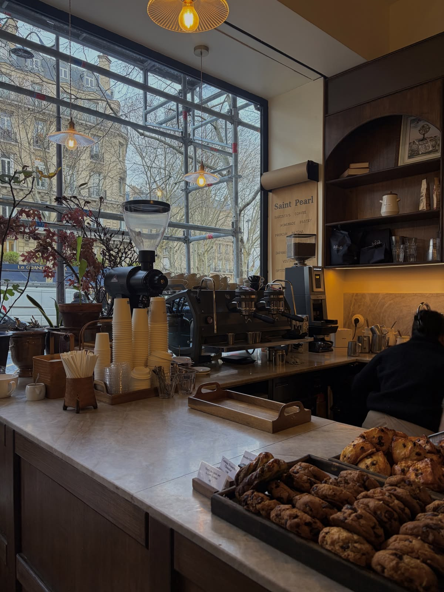

Ruhiger Start
Ein Kaffee, ein kleiner Tisch und kein Stress am Morgen.

Espresso · Frühstück · Milano Feeling
Café Milano ist ein italienisch inspiriertes Tagescafé für warmen Espresso, frische Croissants, kleine Frühstücksmomente und ruhige Gespräche am Fenster.
Unsere Idee
Café Milano ist inspiriert von kleinen Bars und Tagescafés in Norditalien: morgens ein Espresso im Stehen, mittags ein leichter Snack und zwischendurch ein Platz, an dem man kurz durchatmen kann.
Wir mögen Dinge, die einfach wirken, aber gut gemacht sind: warmer Kaffee, frisches Gebäck, klare Aromen und eine Atmosphäre, in der man nicht hetzen muss.
Unser Lieblingsmoment: Cappuccino, Croissant und zehn Minuten Ruhe am Vormittag.

Heute im Café
Heute empfehlen wir ein warmes Croissant, Cappuccino mit feinem Milchschaum und unseren Avocado-Toast mit Rucola.
Öffnungszeiten
Am schönsten ist es morgens, wenn der erste Espresso läuft und die Croissants noch warm sind.
Café-Gefühl
Nicht nur Kaffee. Sondern einen kurzen Moment, der sich gut anfühlt.
Ein Kaffee, ein kleiner Tisch und kein Stress am Morgen.
Croissants, kleine Süßigkeiten und Snacks aus der Vitrine.
Ein Café, das sich eher persönlich als perfekt anfühlen soll.